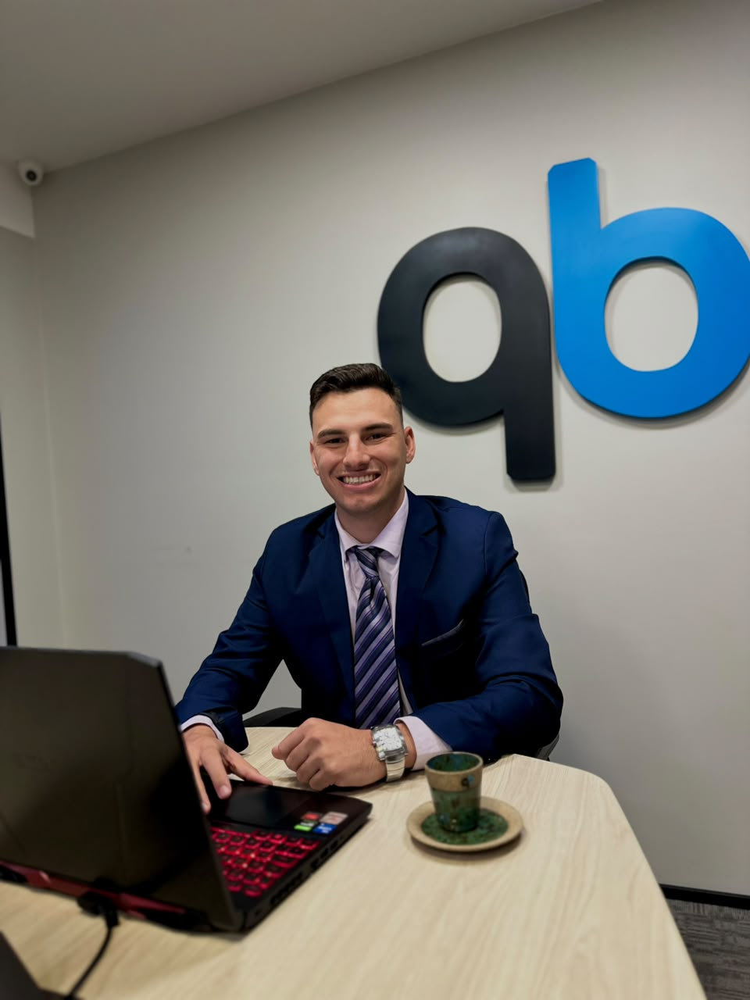

SERPROTECNOLOGIA DA INFORMAÇÃO
Contratado · início em 01/10/2026
Estagiário em TI
Contratação para estágio em Tecnologia da Informação, com início em . Um novo passo na minha trajetória profissional em tecnologia.
Brasília, Brasil · Portfólio profissional
Tecnologia, dados
e visão de negócio.
Conecto minha experiência com pessoas e operações à formação em tecnologia. Em desenvolvimento na área de dados, com curiosidade para aprender e construir soluções úteis.
Engenharia de dados · SQL · Python · Azure

01 / Sobre mim
Sou Gabriel Antunes de Oliveira. Minha carreira reúne atendimento, administração, gestão e rotinas operacionais — experiências que hoje levo para a tecnologia.
Atuei em farmácia, ambiente hospitalar, setor público e gestão de estabelecimentos. Nesse caminho, desenvolvi comunicação, organização, responsabilidade e capacidade de resolver problemas e aprender novos sistemas.
Sou Técnico em Transações Imobiliárias e estudante de Análise e Desenvolvimento de Sistemas na UNINTER. Atuo no mercado imobiliário e aprofundo meus estudos em bancos de dados e engenharia de dados, aproximando a compreensão do negócio das soluções digitais.
Fora do trabalho, valorizo minha família, minha fé e o aprendizado contínuo. Gosto de conhecer lugares novos, acompanhar futebol e assistir a séries e filmes.
02 / Experiência
Minha atuação profissional e o próximo passo na área de TI.
Contratado · início em 01/10/2026
Contratação para estágio em Tecnologia da Informação, com início em . Um novo passo na minha trajetória profissional em tecnologia.
Atuação atual
Atuação no segmento de imóveis de médio e alto padrão, conectando minha formação em Transações Imobiliárias à experiência com atendimento, relacionamento e negócios.
03 / Formação & aprendizado
Formação acadêmica, trilhas de estudo e evolução contínua.
GRADUAÇÃO · EM ANDAMENTO
UNINTER
Formação em desenvolvimento de sistemas, programação, bancos de dados e tecnologias aplicadas.
CURSO · EM ANDAMENTO · 200 HORAS
Instituto Federal do Rio Grande do Sul
Conclusão prevista em 20 de janeiro.
Conceitos de bancos de dados, SQL, prática com PostgreSQL e MySQL e administração de bancos de dados.
TRILHA DE ESTUDO · EM ANDAMENTO
Manual da Engenharia de Dados
Walter Gonzaga
Do Zero a Engenheiro de Dados — Azure
Carlos Araujo Viana
FORMAÇÃO TÉCNICA · CONCLUÍDA
Base em mercado imobiliário, relacionamento com clientes, negociação e processos de transações imobiliárias.
Inglês: básico, em estudo técnico e funcional para o dia a dia e futuras rotinas internacionais.
Espanhol: intermediário.
04 / Portfólio
PROJETO EXTENSIONISTA
Inclusão digital com estudantes da rede pública, aproximando a tecnologia de quem está começando.
05 / Contato
Vamos conversar sobre tecnologia, projetos e oportunidades profissionais.
O e-mail abre seu aplicativo de correio; o WhatsApp abre uma conversa. Você escreve e envia a mensagem pelo canal escolhido.